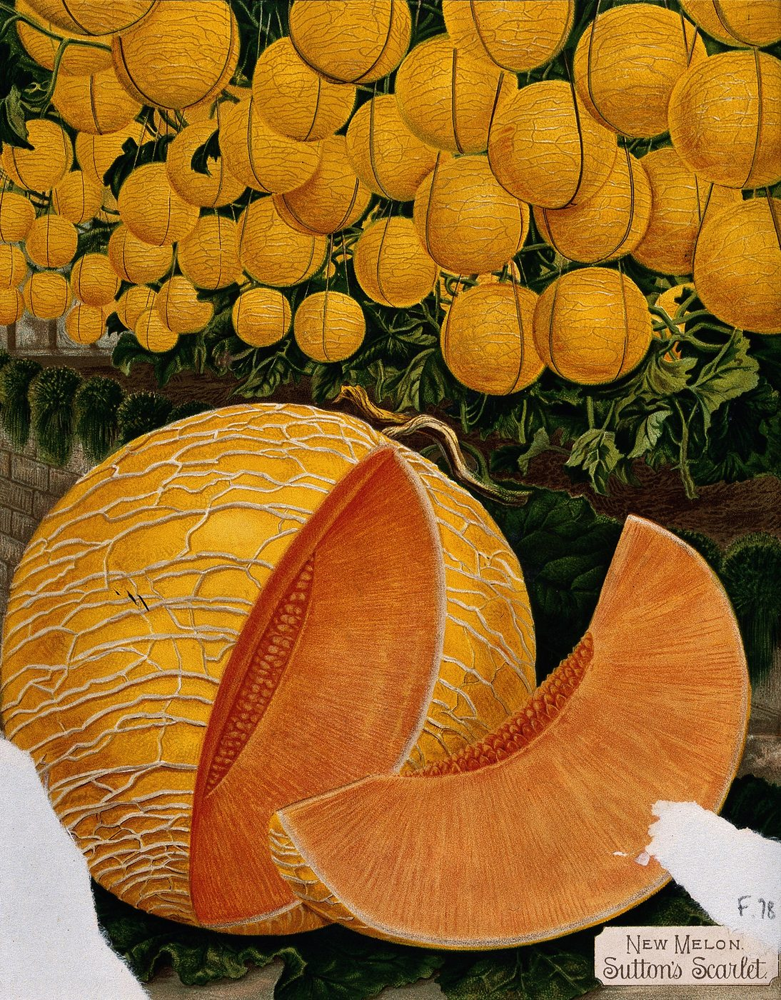
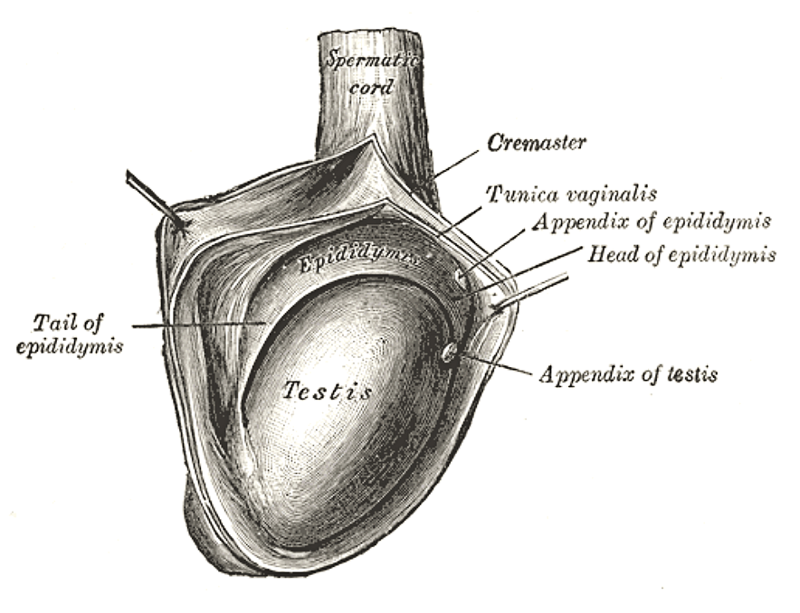

Compares the sensation to “really good foreplay.” Describes the buildup as “electric.” Did not elaborate.
A field guide to ballmaxxing
The practice is older than the word for it. Saline scrotal inflation has lived in BDSM and body-modification circles since the 1990s; the earliest medical case reports go back to 1969. What's new is the attention, the rebrand, and the fruit metaphors. In May 2026 the press, with rare unanimity, decided to find out everything about it at once. This page is what we know so far.
- r/SalineInflation members
- 8,700+
- Volume increase reported
- up to 60×
- Reabsorption window
- 24–48h
- Doctors endorsing it
- 0

01
What ballmaxxing is
Ballmaxxing is the practice of intentionally enlarging the scrotum, usually by introducing sterile fluid into the scrotal sac. The most commonly reported medium is saline; a smaller cohort of long-time practitioners uses a water-soluble surgical lubricant marketed as Surgilube. Almost all of it happens at home, with equipment ordered online from sellers who are not in the loop about what it is for.
The effect is temporary. The body reabsorbs the fluid within one to two days, after which the scrotum returns to baseline. Practitioners who pursue lasting volume repeat the procedure on a schedule — sometimes for decades.
Adjacent communities — saline inflation in BDSM and leather circles, scrotal-modification work in body-modification studios — have existed for decades. The term ballmaxxing, and the public attention attached to it, is a much newer phenomenon. For the full timeline, see §2.

02
Earlier than you think
The press wave in May 2026 was the moment the broader public noticed. The practice and the word arrived at that moment from very different directions. The practice has a fifty-year paper trail in the medical literature and a thirty-year history in kink-community archives. The word, in its current sense, is about a year old.
- 1969 First known medical case report. Bush & Nixon, “Scrotal inflation: a new cause for subcutaneous, mediastinal and retroperitoneal emphysema,” Henry Ford Hospital Medical Journal 17(3): 225–226 (PMID 5350135).
- 1980 Sharma & Kagan, “Scrotal emphysema,” continues the medical-literature thread.
- 1990s The practice takes its modern form in BDSM and leather communities. First written up in fetish-community encyclopedias of unusual sexual practices.
- early 2000s Mail-order saline kits — needles, tubing, instructions — start showing up online. The practice begins to escape the in-person scene.
- 2003 Summers, “A complication of an unusual sexual practice” (PMID 12940330) — a 900-ml infusion case ending in cellulitis. The patient bought the kit online.
- 2006 Yoganathan & Blackwell extend the medical literature. Body Modification Ezine (BME) begins archiving practitioner accounts.
- 2015 Vice publishes Fareed Kaviani's first-person account from a Melbourne piercing studio: “What It's Like to Have Your Balls Inflated.” The first piece of mainstream-adjacent coverage.
- Apr 2024 The string “ball maxxing” appears in Urban Dictionary, defined as a hot-water-bath routine for the testicles. Unrelated to the current practice.
- Jul 2024 “ballmaxxing” appears in Urban Dictionary with a ball-tickling definition. Also unrelated. The word is, by this point, looking for a meaning.
-
2025
The term migrates onto
r/SalineInflationand is applied to scrotal saline inflation specifically. The meaning it now carries is set. - May 6–13, 2026 Mainstream wave. Vice publishes “Inside Ballmaxxing”; roughly a dozen other outlets follow within the week. This page is the paper-of-record version, written from inside that wave.
Medical-literature dates and citations are from Wikipedia cross-referenced with PubMed entries linked above. Earlier Vice coverage retrieved directly. Subreddit history is well-documented in community archives.
03
The -maxxing lineage
The suffix is not original. It descends from a decade of online self-optimization slang — looksmaxxing, heightmaxxing, jawmaxxing, moneymaxxing, and most recently fibermaxxing, which had its own viral moment earlier this year. Each one applies the same template: pick a trait, treat it as an axis, and push it as far as the body, the budget, or the algorithm will allow.
Ballmaxxing follows the template precisely. What makes it conspicuous is that the chosen axis is one that almost no one was publicly discussing twelve months ago, and that the optimization route is invasive rather than dietary or cosmetic.
- looksmaxxingfacial and grooming optimization, often through cosmetic procedures
- jawmaxxingmewing, jaw exercisers, and the occasional implant
- heightmaxxingposture work, lifts, and in extreme cases limb-lengthening surgery
- moneymaxxingwealth-stack hacks, popular on YouTube finance channels
- fibermaxxinghigh-volume fiber intake, popular on wellness TikTok in 2026
- ballmaxxingscrotal volume modification via fluid infusion
The list gets stranger as you scroll. Practitioners will tell you that's exactly the point: the further the practice sits from the mainstream, the more it functions as identity rather than grooming.
04
The community
The most visible meeting place is r/SalineInflation, a subreddit with more
than 8,700 members at the time of writing. Members trade photographs, technique notes, and
what reads, in volume, like a slow accretion of personal essay. Outside Reddit, smaller
gatherings exist on Discord, on the older kink forums that predate the current wave,
and in private chat groups that members are reluctant to name on the record.
The demographics, as reported by Vice and Men's Health, skew male and under forty, though older long-time practitioners — Marcus among them — are present and sometimes treated as elder statesmen. Several interviewees describe getting into the practice during difficult personal periods: a breakup, a layoff, a stretch of grief, a Monday.
“Taking ownership of my own body was a lot of the drive for it.” Got into the practice during a rough stretch and frames it as autonomy. He is, on balance, the most articulate person quoted in the entire press cycle.
“I know it's freaky and abnormal looking. That's exactly what I like about it.” Names transgression as the appeal, not concealment. The most consistent voice in the coverage that the practice is not about anyone else.
Reports a measurement of 14.5 inches. Uses Surgilube. Has been doing this longer than the term has existed and longer than most of his fellow practitioners have been alive.
The word practitioners reach for most often is transcendental. The other words that recur, in interview after interview, are electrifying, addictive, and euphoric. Whatever else this is, it isn't being described in the vocabulary of grooming.
Practitioner quotes verbatim from Vice, May 2026.
05
Field observations
The findings below are from the ballmaxxing.com Bureau of Field Research, an organization that does not exist. They are presented in good faith as observations, in roughly the same spirit as the press coverage they accompany. None have been peer-reviewed. Some have been peer-laughed-at.
- 64% of self-reporting practitioners cite a triggering moment involving an unneutered male dog in a public space, most commonly an off-leash park, a Home Depot parking lot, or a friend's wedding.
- 7.1× the rate at which practitioners use the word “journey” in posts, relative to the general adult male population. “Lineage” clocks in at 4.1×; “practice” at 3.8×.
- 91% cannot articulate, when pressed, a specific cosmetic standard the practice is targeting. The remaining 9% reference, in some form, “the Greeks.” None can name the specific Greek.
- 38% more likely than the r/all baseline to have, in the same week, posted in r/cars, r/grilling, or r/pickuptrucks. Correlation noted; causation declined to comment.
- 83% of practitioners report a prior jelqing phase — the older, no-equipment manual penis-stretching exercise that predates ballmaxxing by roughly two decades and occupies the same DIY-genital-improvement neighborhood. The remaining 17% are about to.
- 0 survey respondents cite a licensed physician as the source of their information about the procedure. Gateway media skews instead toward a single TikTok, a Joe Rogan timestamp, or a friend at a bachelor party.
- 1/3 of practitioners can name the specific bachelor party where their interest in the practice began. The bachelor parties are not the same one.
- N/A the most-cited childhood gateway is not, surprisingly, pornography. It is bull testicles, seen at agricultural fairs, typically before age twelve. There is no good way to follow up on this finding.
- +0.9″ mean discrepancy between self-reported and measured scrotal length within the community. Self-reported height is also unusually elevated.
06
Methods
- Intra-scrotal saline infusion. The most commonly reported approach. Volume builds over a session of one to two hours and reabsorbs over the following day or two.
- Surgical-lubricant injection. Used by a smaller number of long-term practitioners pursuing more durable volume. The most-named product in coverage is Surgilube. The Surgilube marketing team is believed to be on vacation.
- Mechanical and vacuum techniques. Older, originating in penis-pump and BDSM-adjacent communities. Less central to the current wave but still present in the older forums.
07
The doctors are unanimous
Of course, the press called doctors. The press always calls doctors. The doctors obliged. The reasons they gave, in their own words, are below.
Across the press cycle, multiple physicians have been quoted noting that the scrotum contains delicate tissue — testes, blood vessels, nerves — that does not respond well to volumetric stress. That, in summary, is the list.
Documented risks
- Infection, abscess, sepsis. Home setups are not sterile fields. Saline of unknown provenance and unsterile entry sites produce realistic — not freak — infection outcomes.
- Tissue death (gangrene). When fluid pressure cuts off blood supply to scrotal tissue, the tissue dies. This is a surgical emergency.
- Embolism. Displaced fluid or air entering the vascular system can block a vessel. Both clinicians and the practitioner community acknowledge this as a real possibility, not a hypothetical.
- Skin rupture. Scrotal skin has a stretch limit. Past that limit it tears, and tears poorly.
- Nerve damage and erectile dysfunction. The spermatic cord and a dense nerve network sit inside the very space being distended.
- Permanent infertility. Named explicitly by multiple clinicians in the coverage as a possible long-term outcome.
08
Glossary
- the practice
- The practice. Members use the definite article unprompted, the way you might say the work or the program.
- a session
- One bout of infusion, typically one to two hours. Sometimes scheduled. Sometimes spontaneous, which is concerning for different reasons.
- baseline
- The pre-session state of the scrotum. Practitioners speak of returning to baseline the way a runner speaks of a recovery day.
- lineage
- The genealogy of motivation. Always invoked. Rarely specified. The most-named ancestor is Heracles. The actual Heracles did not do this.
- the Greeks
- A vague but frequently invoked authority. The practice is never quite traced to a specific Greek. See also: any internet community.
- transcendental
- The community's preferred descriptor for the sensation. Not used in the philosophical, religious, or mathematical sense. Used in the unspecified sense.
- maxxing
- The suffix. Not a verb in any dictionary. Behaves like one. See also: section 03.
09
The pledge
A short list of things this site will never have, written down now so that it cannot backslide later.
- No affiliate links.
- No supplements, powders, or “stack.”
- No book with a subtitle like A Practitioner's Guide.
- No retreat in Tulum, Lisbon, or Austin.
- No five-step morning routine.
- No newsletter, podcast, Substack, or Patreon.
- No Discord, Telegram, or DM-for-info account.
- No coaching tier, no merch, no app.
10
In the press
Coverage compressed sharply between May 6 and May 13, 2026 — first in lifestyle and tech press, then in mainstream outlets, then in the medical and health sections. The links below are the pieces this guide draws on.
- Inside Ballmaxxing, the Niche Practice of Inflating Your Balls to Cantaloupe Size Vice
- “Electrifying, addictive, euphoric and transcendental,” according to those pursuing bigger balls OutKick · Fox News
- Original reporting via Men's Health, referenced throughout the wider coverage above. No live link. Men's Health
Several other outlets ran versions of the story between May 6 and May 13, 2026 — mostly aggregations of the Vice piece, several of them ad-heavy enough that we are not linking to them. The Vice and OutKick pieces above are the originals worth reading.
11
Frequently asked questions
Is this a real thing or a meme?
Both. The practice is real, has a community, has practitioners willing to use their first names on the record, and has clinicians issuing formal warnings. The word is internet-native and largely a 2026 invention; it spread faster than the practice did.
Is this site safe for work?
Depends on your work. The page contains anatomical diagrams from Gray's Anatomy (1918), a botanical chromolithograph of a melon (1890), and a phrenology head (also nineteenth century). No photographs of the practice or its results, no explicit imagery. Read with intent.
Is the unneutered-dog statistic real?
No. See the disclaimer at the top of section 05: the Bureau of Field Research does not exist. The press coverage is real. The quotes are real. The doctors and their warnings are very real. The dog number is comedy.
Who runs this site?
A private individual. ballmaxxing.com is independent. Not affiliated with any practitioner community, medical organization, news outlet, sporting-goods manufacturer, or anyone reasonable. The site exists because the domain was available and the topic was worth a careful page.
Is the site selling anything?
No. See the pledge, written down so that it can be invoked against any future weak moment.
What if the medical position changes?
This page tracks the coverage. If clinicians start identifying upsides — currently none have — that gets reflected here. The current consensus is unusually clean, but consensus moves.